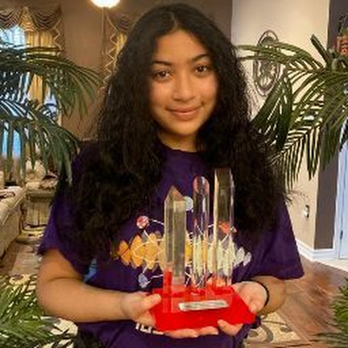

About
Our Mission
Our mission is to empower individuals to take control of their habits and make meaningful progress towards their goals. We believe that small, consistent actions can lead to significant positive changes in people's lives.
Team HabitFlow
Adam BridgesRole: Team Lead Adam is a software developer with a passion for building applications that help people improve their lives. He has experience in full-stack development and is the Team Lead of HabitFlow. His contributions focus on organizing the project, teamwork, and the Home and About pages. |
Tina KausRole: Software Development Tina is a software developer with a passion for building applications that help people improve their lives. She has experience in software development and is a key member of the HabitFlow team. Her contributions focus on the Tips & Resources page and the pages for creating, editing, and deleting habits. |
||
|
 |
Muskaan SenguptaRole: Software Development Muskaan is a software developer with a passion for building applications that help people improve their lives. She has experience in software development and is a key member of the HabitFlow team. Her contributions focus on the Dashboard and My Habits pages. |
Liam WestRole: Quality Assurance Liam is a quality assurance specialist with a passion for ensuring that applications meet the highest standards of performance and user experience. He has experience in testing and debugging and is a key member of the HabitFlow team. His contributions focus on the Progress and Contact pages. |